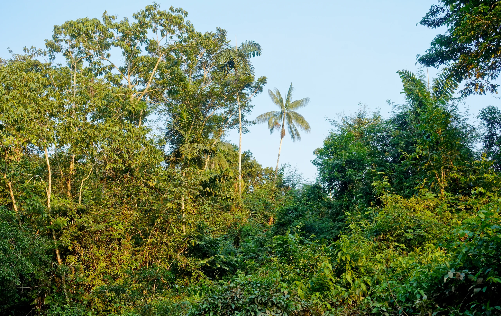
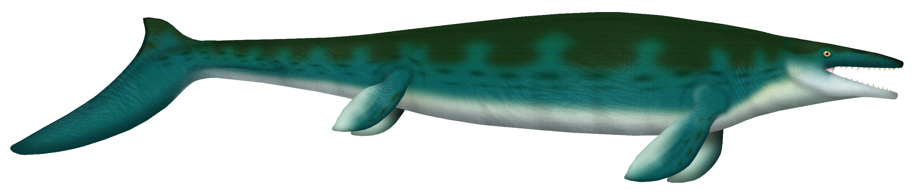

Rikuna
A Kichwa word meaning “to observe.” A field-based initiative where scientific curiosity, local knowledge, and care for place move together.
Cuyabeno, Ecuador · Photo: Fährtenleser / Wikimedia Commons · CC BY-SA 4.0 · Resized and cropped for display.
The Amazon is a living archive.
Rikuna is an interdisciplinary initiative that integrates scientific research, environmental education, and community empowerment in the heart of the Ecuadorian Amazon. Led by students and researchers from Yachay Tech University, the project merges ancient landscapes with modern science to protect natural heritage and inspire new generations of local scientists.

A fossil that changed the map.
Rikuna led the discovery of Ecuador’s first mosasaur fossil in the Tamia Yura community. The finding resulted in a peer-reviewed scientific publication and placed the Amazon on the global paleontological map.
Read the publication ↗

Protecting the caves with the people who know them.
We support local efforts to preserve the sacred and geologically unique cave system through scientific mapping, documentation, and sustainable tourism models—working with the Tamia Yura Indigenous community as a partner in stewardship.

Science belongs in the room.
The Science Tunnel is an interactive exhibition designed to share the geological and ecological significance of Ecuador’s Amazon region—and the vital role Indigenous communities play in sustainable development.
During the COVID-19 pandemic, Rikuna also distributed computers to students in the Amazon region of Ecuador, helping rural communities continue learning through digital access.
From evidence
to belonging.
Every Rikuna activity is designed to make research visible, useful, and connected to the places where it begins.
Working with community members and researchers to document geological and ecological knowledge.
Building educational experiences—from the Science Tunnel to digital access for students in rural communities.
Supporting conservation and sustainable tourism models that protect cultural and natural heritage.
Rikuna is still becoming.
Every expedition, classroom, and conversation adds another layer to a living archive of science, place, and community knowledge.
Read the Rikuna stories ↗